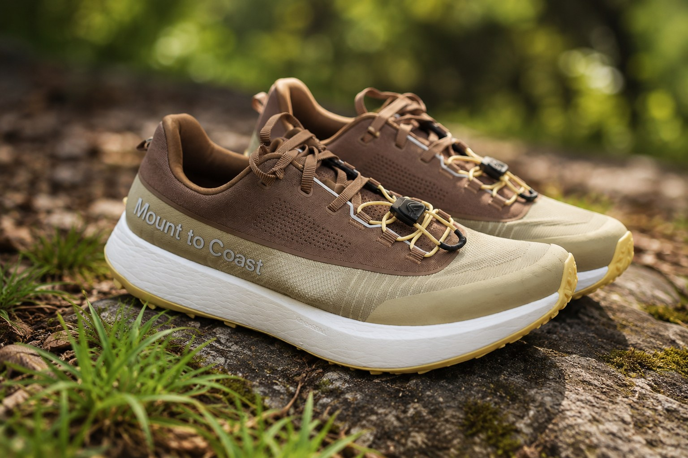

Time to do a shoe review! This one's the Mount to Coast H1. Right off the bat, the dual-zone lacing is the standout feature. It's genuinely innovative and something I really like, especially on longer runs when I want to loosen up the toe box without messing with the fit through the midfoot.
Trail & Road Performance
This is their hybrid model, and it shows. I've noticed a really comfortable transition between different terrains and pavement. The lugs are small enough that they don't feel heavy on a run, but there's still enough tread to give excellent traction and grip on the trails. I wore these in a trail race recently and didn't slip once.
Fit & Feel
The arch is slightly higher than most shoes I wear, but honestly it isn't that noticeable once you're moving. Comfortable enough to forget about, which is exactly what you want.
Look
Not to be too vain here, but they look great. I can wear these to hang out with friends without looking like the "I'm a runner" guy, but with these on I also look like I know what I'm doing standing at the start line. Great versatile shoe.

Durability
They claim these will last longer than other shoes out there, and I'll be putting that to the test myself over time. That said, I've talked to people who've worn them on 50k runs or longer, and they say the shoes still look like they can keep going.
One Thing I Really Like: The Naming System
Small thing, but I really like the way this brand names their shoes. It's simple and easy to remember, and you instantly know what each shoe is built for:
- R1 — Road
- C1 — Comfort
- H1 — Hybrid (this one)
- T1 — Trail
No guessing games or gimmicky names to memorize. One letter tells you exactly what the shoe is designed to do.
Bottom Line
A genuinely versatile hybrid trail/road shoe with a standout lacing system and a look that works on and off the trail.